Gestão de Qualidade
Módulo de não-conformidades (NC), plano de ação no formato 5W2H (CAPA) e checklists de inspeção. Aplicação web mobile-first: o inspetor registra a ocorrência pelo celular, na hora e no local.
Recursos
Não-conformidades e plano de ação
- Abertura manual ou a partir de uma carga de autoclave, com severidade Baixa, Média, Alta ou Crítica
- Ações de contenção, corretiva e preventiva no formato 5W2H
- Confirmação de execução com assinatura eletrônica automática (usuário e data/hora)
- O fechamento da NC é bloqueado enquanto houver ação sem verificação de eficácia
Checklists de inspeção
- Catálogo de perguntas por tipo (boas práticas de fabricação, controle de temperatura, higiene dos manipuladores, entre outros)
- Item conforme ou não conforme, com observação e foto de evidência tirada no celular
- Resultado consolidado de cada item na tela de detalhe
Sugestão automática de NC
- Gerada quando um item de checklist é marcado como não conforme
- Varredura periódica das auditorias do Sistema: cargas com F0 abaixo do mínimo ou auditoria reprovada
- O inspetor confirma como ocorrência real ou descarta como falso positivo
Acesso e integração
- Três papéis cumulativos: Inspetor, Qualidade e Administrador
- Login próprio da aplicação, independente do sistema legado
- Dados de autoclaves do Sistema consultados somente para leitura
Telas
Fluxo completo: da abertura da não-conformidade ao fechamento, checklists e sugestões automáticas.
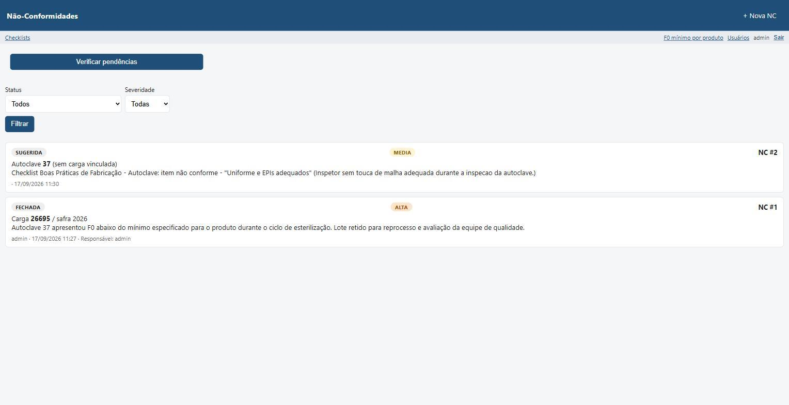
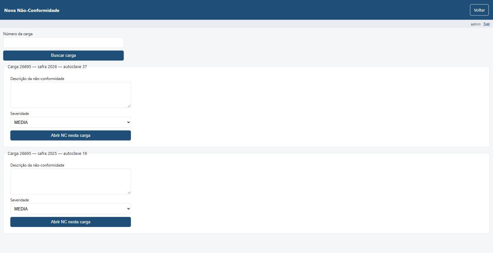
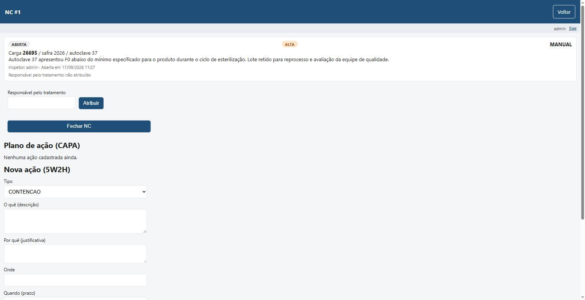
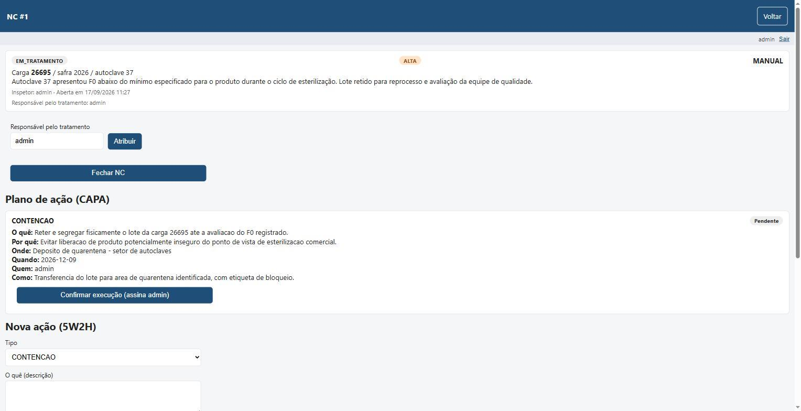
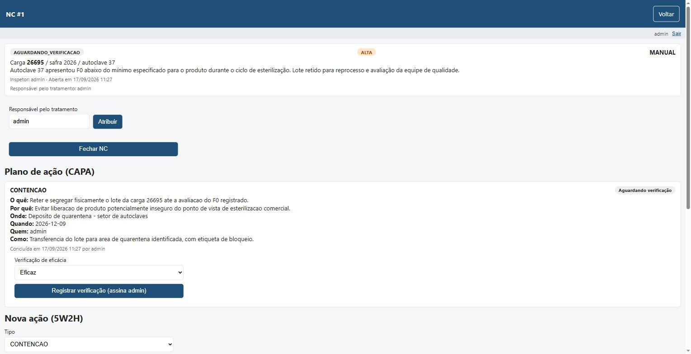
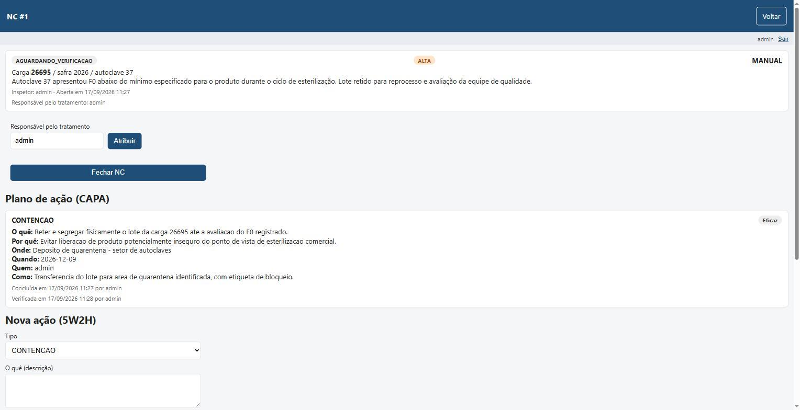
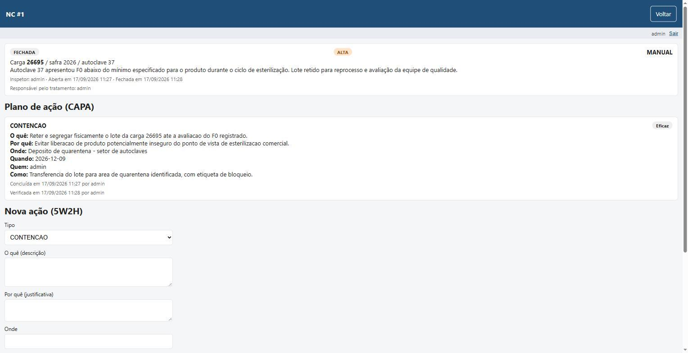
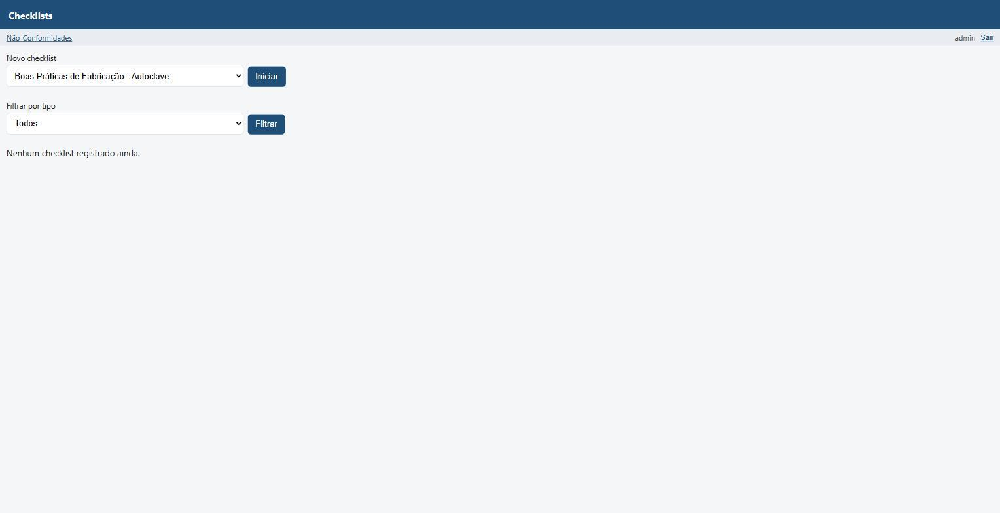
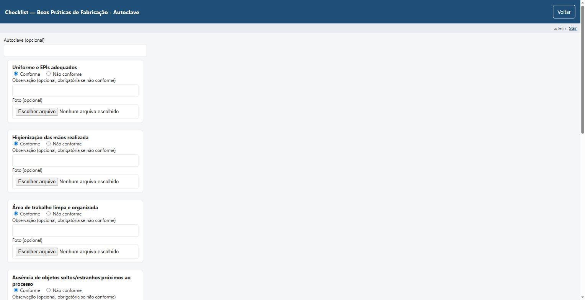
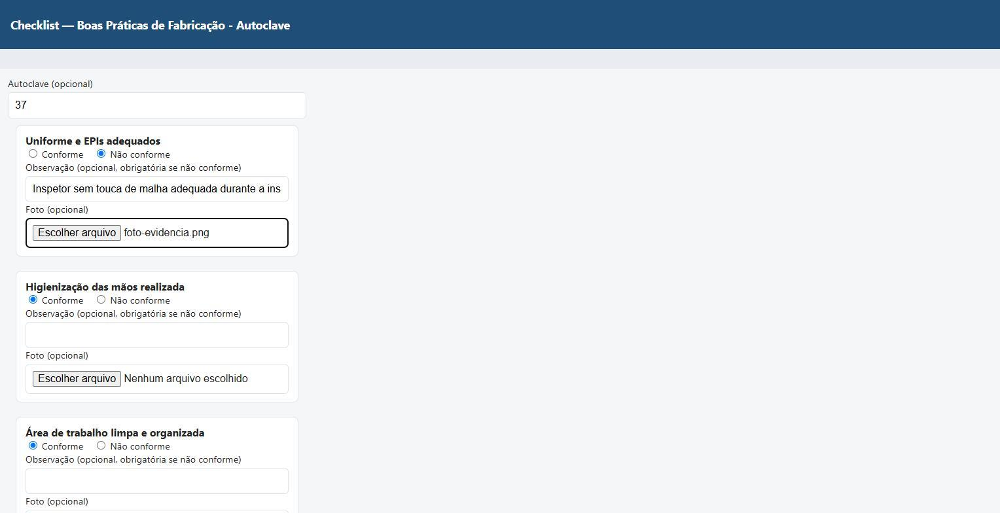
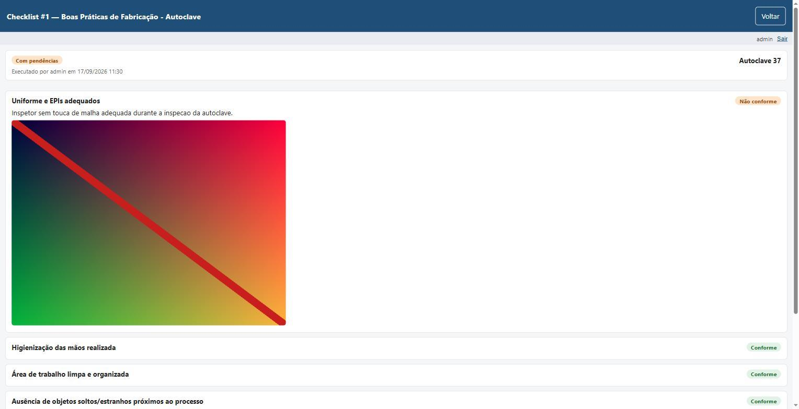
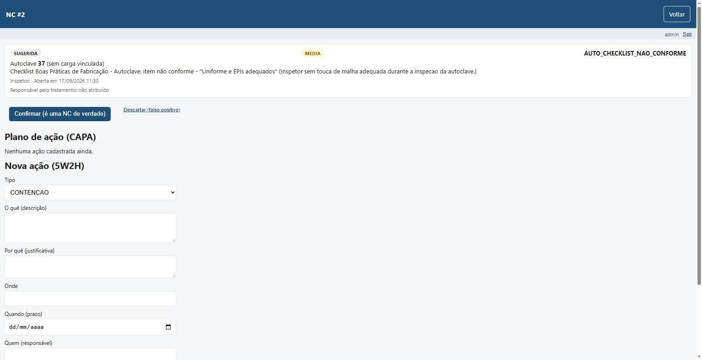
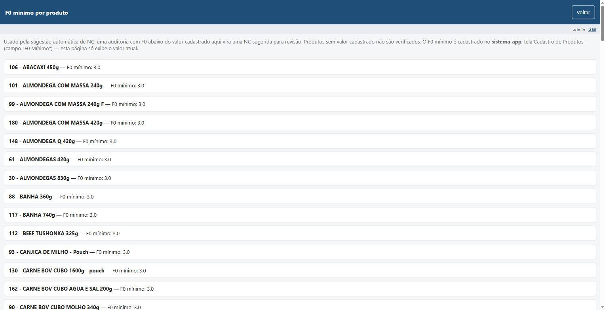
Módulos
Não-conformidades
Abertura manual ou automática (F0, auditoria). Plano de ação 5W2H com assinatura eletrônica e verificação de eficácia.
Rastreabilidade
Lote final ↔ cargas ↔ matéria-prima ↔ embalagem ↔ distribuição. Busca reversa por qualquer elo.
Checklists tipados
Inspeção no celular: Sim/Não, numérico, seleção, texto. Foto de evidência e conformidade automática.
Retenção de lote
Parada de linha automática. Quarentena retroativa com liberação manual (causa-raiz + ação).
Demo interativa
Experimente a versão de demonstração do módulo.